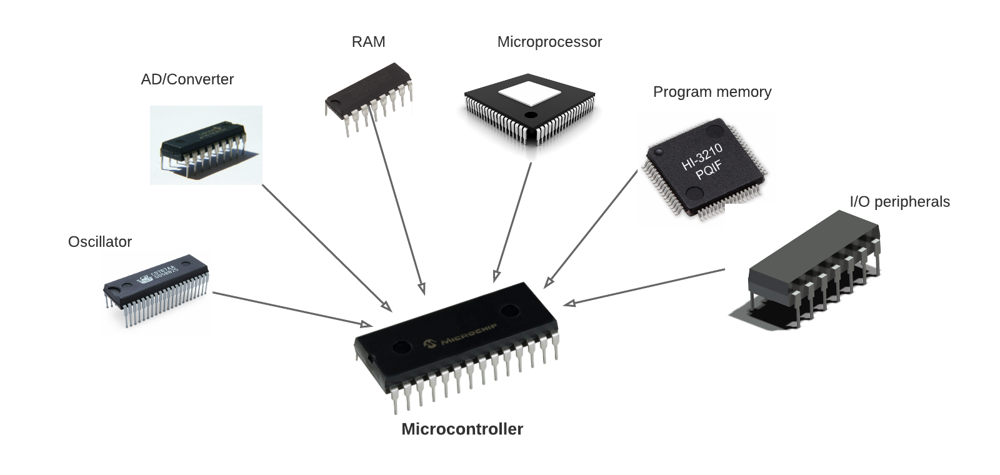
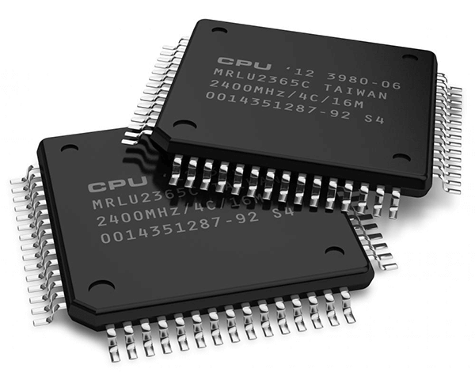
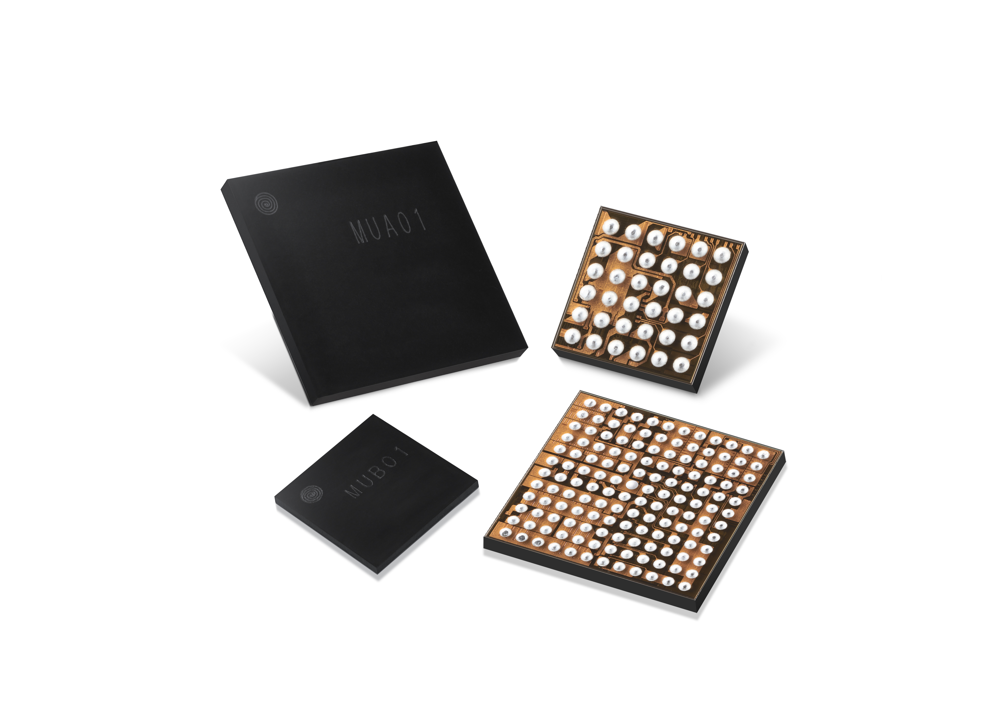

Microcontrollers (MCUs): Microcontrollers are highly sought-after by buyers due to their versatility and widespread use in various electronic devices. They serve as the brain of embedded systems, controlling functions ranging from simple tasks to complex operations. With applications in automotive, consumer electronics, industrial automation, and more, MCUs are essential components in modern technology.
Memory Chips: Memory chips, including dynamic random-access memory (DRAM) and flash memory, are in high demand among buyers. These chips store data temporarily (DRAM) or permanently (flash memory) and are crucial components in computers, smartphones, tablets, and other digital devices. The increasing need for higher storage capacities and faster data access drives the demand for advanced memory chips.
Power Management Integrated Circuits (PMICs): PMICs are essential for efficiently managing power distribution and consumption in electronic devices. They regulate voltage levels, control battery charging, and optimize energy usage, thereby extending battery life and enhancing overall device performance. With the proliferation of portable devices and IoT applications, PMICs play a crucial role in maximizing energy efficiency and prolonging battery runtime.
